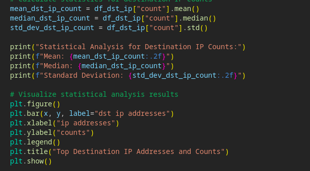
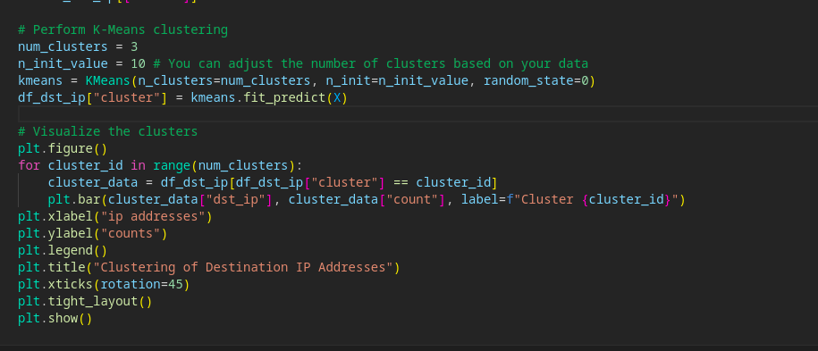
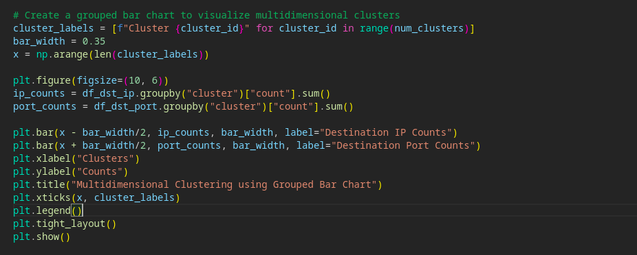

Pcap
Analyzer
So this was the first tool that I wrote to analyze pcap files -GitHub link here- But it wasn't enough. It doesn't do anything but calculate the mean value threshold and send IP addresses to Virustotal. Now I am improving this tool by using chat-GPT. Here's what I have done so far
I am now calculating mean values, median values, and standard deviation values on each destination IP, destination port, source IP, and source port. Other than that I use the K-mean algorithm for anomaly detection and of course, I applied this on other data
Then I used Multidimensional Analysis on destination IP and destination ports
